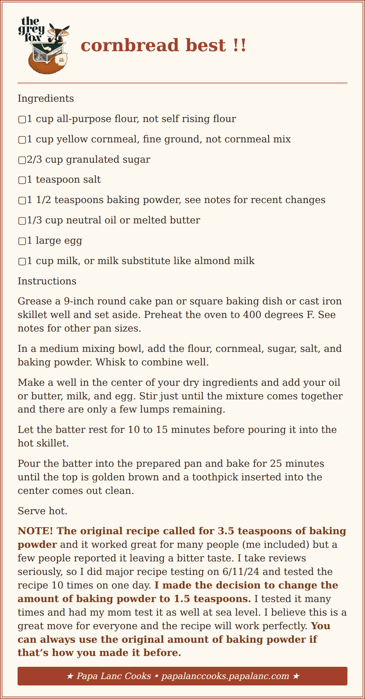

WELCOME
Ingredients
▢1 cup all-purpose flour, not self rising flour
▢1 cup yellow cornmeal, fine ground, not cornmeal mix
▢2/3 cup granulated sugar
▢1 teaspoon salt
▢1 1/2 teaspoons baking powder, see notes for recent changes
▢1/3 cup neutral oil or melted butter
▢1 large egg
▢1 cup milk, or milk substitute like almond milk
Instructions
Grease a 9-inch round cake pan or square baking dish or cast iron skillet well and set aside. Preheat the oven to 400 degrees F. See notes for other pan sizes.
In a medium mixing bowl, add the flour, cornmeal, sugar, salt, and baking powder. Whisk to combine well.
Make a well in the center of your dry ingredients and add your oil or butter, milk, and egg. Stir just until the mixture comes together and there are only a few lumps remaining.
Let the batter rest for 10 to 15 minutes before pouring it into the hot skillet.
Pour the batter into the prepared pan and bake for 25 minutes until the top is golden brown and a toothpick inserted into the center comes out clean.
Serve hot.
NOTE! The original recipe called for 3.5 teaspoons of baking powder and it worked great for many people (me included) but a few people reported it leaving a bitter taste. I take reviews seriously, so I did major recipe testing on 6/11/24 and tested the recipe 10 times on one day. I made the decision to change the amount of baking powder to 1.5 teaspoons. I tested it many times and had my mom test it as well at sea level. I believe this is a great move for everyone and the recipe will work perfectly. You can always use the original amount of baking powder if that’s how you made it before.

WELCOME
Converted from the original file for viewing — open/download the original to edit it.